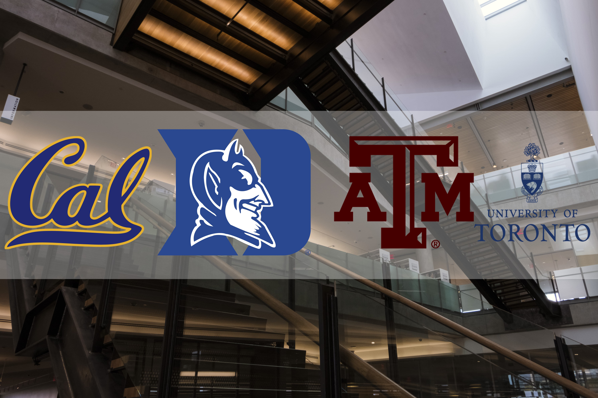
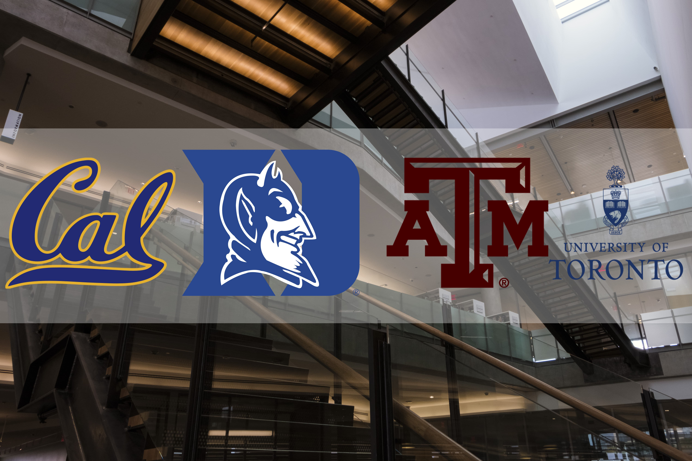

Aishani Sil
Aishani Sil is a freshman at UC Berkeley interested in computer science and data science. In her free time, she enjoys making art, reading, and traveling (on a budget, using Google Street View). The picture on her bio is fake, this is what she actually looks like.
Akshara Anand
Akshara Anand is a freshman at Duke University interested in the intersections of computer science, statistics, and business. In her free time, she enjoys exploring the outdoors, listening to podcasts, rewatching Gilmore Girls, reading, and spending time with friends and family.
Lance Cook
Lance Cook is a freshman at Texas A&M University interested in UX Design, Marketing, and Telecommunications. In his free time, he enjoys photography, videography, watching and playing sports, and spending time with his family.
You can click here to connect!
Nyah Way
Nyah Way is starting her first year of university at the University of Toronto in Canada and will be majoring in computer science. When she isn’t wearing a hoodie typing at a computer in a dark room, Nyah enjoys volunteering, photography, and spending time with her sisters.


 
